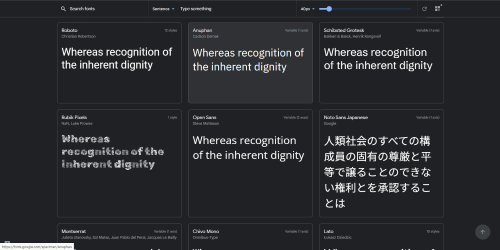
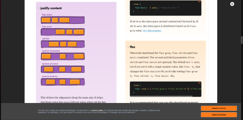
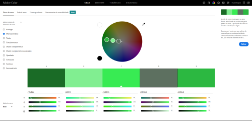
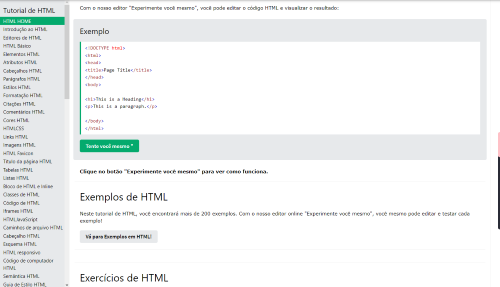

Google fonts
O Google Fonts é uma biblioteca online de fontes gratuitas que podem ser usadas em projetos pessoais e comerciais. Com uma grande variedade de opções de fontes, o Google Fonts é uma ferramenta indispensável para designers e desenvolvedores web. 
Google fontsCSS-Tricks
O guia completo do Flexbox no site CSS-Tricks é um recurso que aborda todos os aspectos do Flexbox, desde os conceitos básicos até as técnicas avançadas. É dividido em seções e inclui exemplos de código e ilustrações. É uma excelente referência para consultas futuras sobre o assunto.
css-tricksAdobe color
O Adobe Color é uma ferramenta online desenvolvida pela Adobe para criar paletas de cores personalizadas para uso em projetos de design. Com essa ferramenta, é possível escolher cores complementares, análogas ou monocromáticas, além de criar paletas a partir de imagens.
adobe colorW3Schools
Os guias da W3Schools são recursos educacionais online que ajudam a aprender tecnologias web. Eles contêm informações detalhadas sobre cada tecnologia, são fáceis de seguir e bem organizados. Cada guia é dividido em seções e subseções que cobrem diferentes aspectos da tecnologia.
w3schools